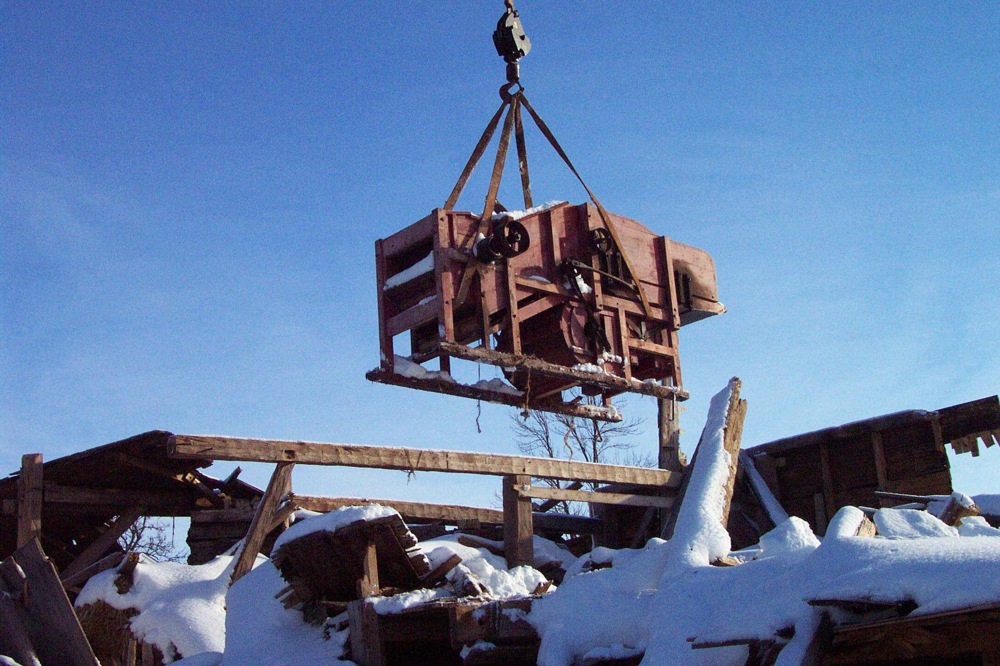

No.2 June 18, 2004
Foundation Assists with Rescue

Hurricane Juan uncovered a Hall thresher in a barn belonging to John MacQuarrie in Hampshire, PEI.; the thresher belonged to his Grandfather. The Foundation provided financial assistance to the Museum Foundation to hire a crane to remove the thresher from the loft and transport it to dry storage. Retrieval was under the direction of Tom LeClair of the Museum Foundation assisted by Tony Glencross on behalf of the Community Foundation.
Island-made Farm Equipment
PEI has a proud agricultural history. A few months ago, some of us became concerned that some of that history in the form of agricultural equipment and implements is disappearing off the Island or decaying decaying in the woods or in old barns. More particularly, we are concerned about equipment and implements made in Prince Edward Island.
Over the past year, a small group has been meeting to discuss the matter. The core committee consists of George Wright, Jack Cutcliffe, Dr. Tom Hall, Henry Compton, Tony Glencross, and Don Glendenning. Our contact with the PEI Museum and Heritage Foundation is Tom LeClair. Thanks to a donation by Tom Hall, the Foundation was able to secure the services of Tony Glencross to help with information gathering.
The Committee is satisfied that there are pieces of Island-made farm equipment that should be saved; the stumbling block is the lack of dry storage. We are working with the Museum Foundation to identify more precisely the kind and amount of space and at what cost. I’ll keep you posted.
In the process of our investigation, we found a Hall thresher in a barn belonging to Mrs. E. Carver, Cambridge, PEI. While the thresher itself was not in very good shape, the original owner had recorded on the side of the thresher a list of farms where he had threshed along with their dates. Thanks to Mrs. Carver, this portion of the thresher is now in the Museum collection.
Mr. MacQuarrie gave the thresher, shown in the photo, to the PEI Museum and, thanks to Tony Glencross and Tom LeClair it is now in safe and dry storage
Address
Community Foundation of Prince Edward Island
119-121 Queen Street, Suite 105
Charlottetown, PEI C1A 4B3
Tel: (902) 892-5859
Email: foundation@comm-fdn.pe.ca
Website: www.comm-fdn.pe.ca
_______________________________________
The Foundation News is an informal newsletter edited and published electronically by, and at the whim of, Don Glendenning. Think of it as a letter from a friend. Please let me know if you want your name removed from the mailing list. Feel free to send it to a friend or otherwise let me know that you want to be on the mailing list. Don may be reached through the Foundation Office or at don@glendenning.net